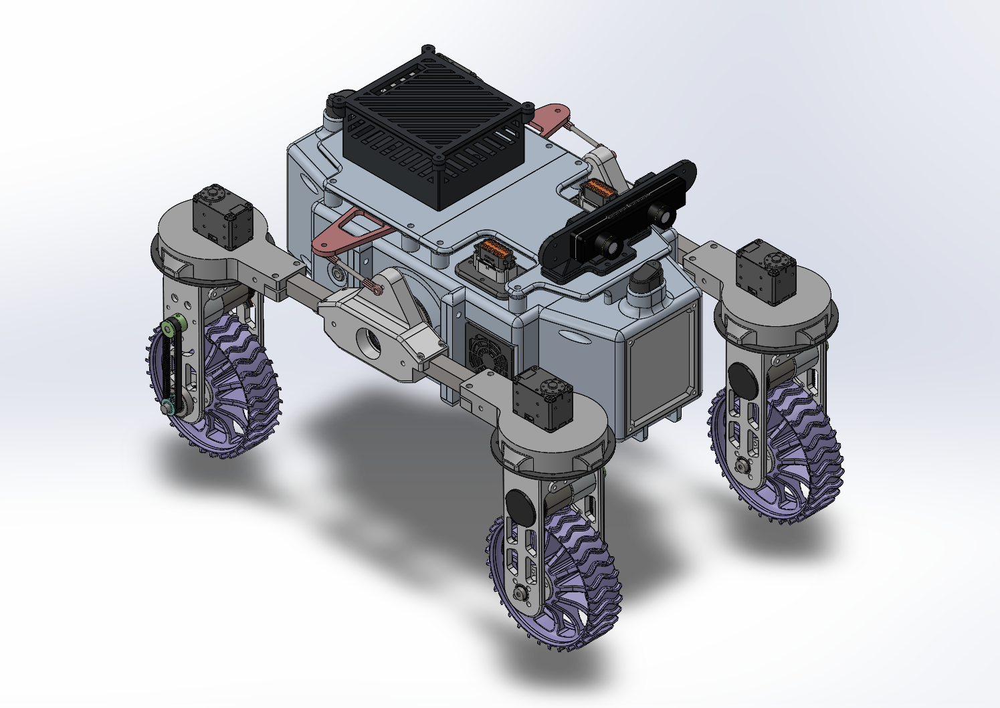
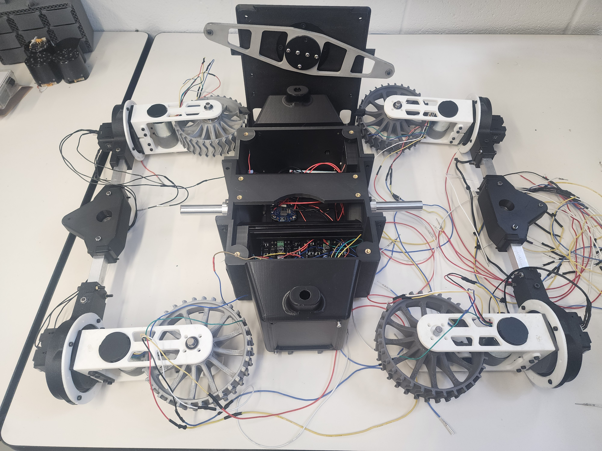
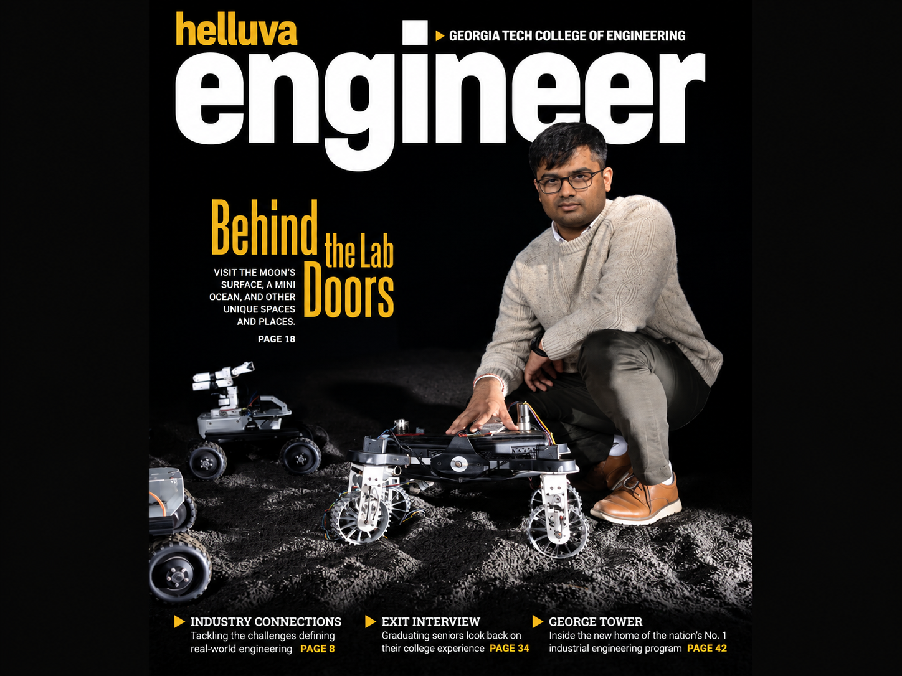

Aaron Kingslien — Portfolio
Lunar Rover Chassis and Drivetrain
Independently redesigned, manufactured, and assembled a complete rover to reduce mass, improve serviceability, and increase terrain capability.



Before coming into the Aerospace Robotics Lab, the original rover was unoptimized as a research platform due to excess mass and difficult internal access. I treated the chassis, drivetrain, electronics, wiring, and removable hardware as one connected system rather than isolated components, which allowed me to consider its ease of assembly and maintenance.
A complete digital assembly allowed me to validate packaging, fastener access, tool clearance, cable routing, and assembly order before manufacturing. I then carried the design through fabrication, electrical integration, troubleshooting, and operational testing.
Architecture
Rebuilt the chassis around the components we intended to preserve while accounting for updated loading conditions and manufacturing constraints.
Mobility
Revised drivetrain geometry to improve traction and torque using a combination of published research and previous experimental data.
Accessibility
Improved access to electronics and removable components, primarily due to a central bracket that allowed the rover to be disassembled into two halves.
Tools and Skills Used: SolidWorks · Design for Manufacturability · Mechanical Assembly · Electrical Integration · Rapid Prototyping